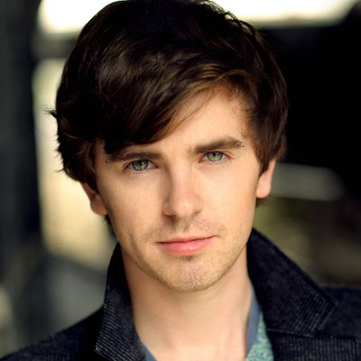
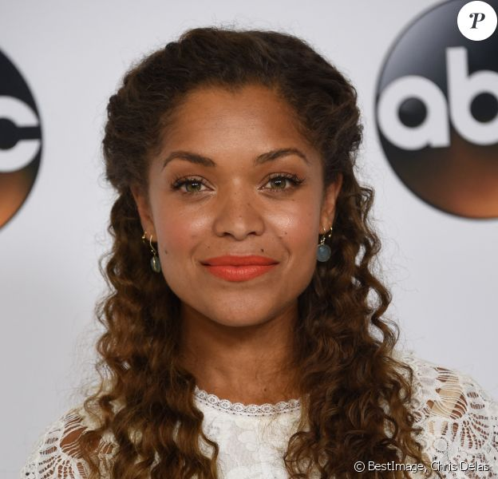
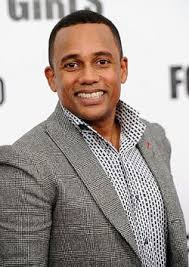
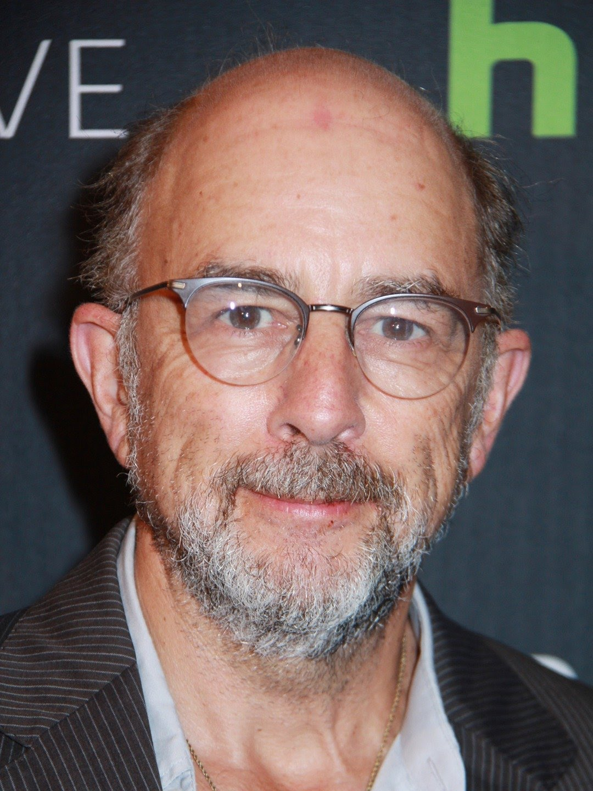
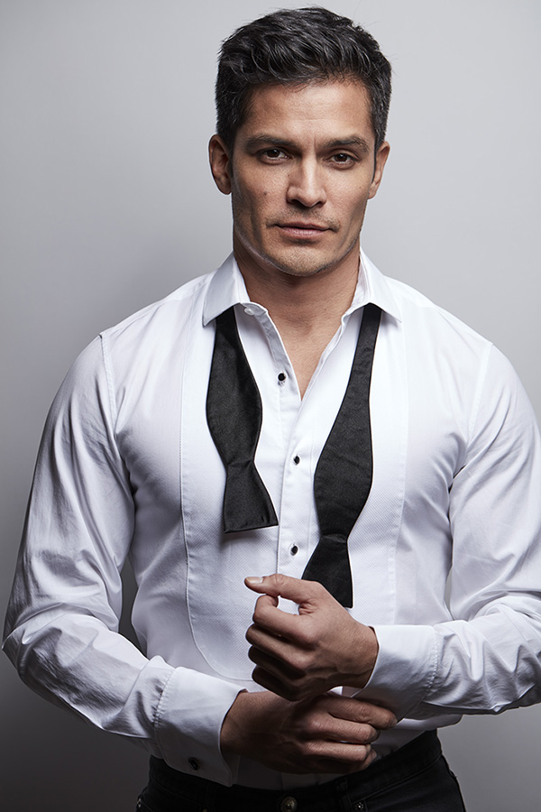

The Good Doctor is an American medical drama television series based on the 2013 South Korean series of the same name. Actor Daniel Dae Kim noticed the original series and bought the rights for his production company. He began adapting theseries and,creatingn a pilot in 2015,eventually shopped it to CBS, his home network. CBS decided against from critics creating a pilot.Because Kim felt so strongly about the series, he bought back the rights from CBS. Eventually, Sony Pictures Television and Kim worked out a deal and brought on DavidShore, creator of the Fox medical drama House, to develop the series.
The series debuted on September 25, 2017. The Good Doctor has received generally mixed
reviews from critics, who have praised Highmore's performance but criticized the series' storylines.
The portrayal of autism has also divided critical opinion.In May 2021, the series was renewed for a
fifth season which premiered on September 27, 2021.
If you want to watch all the episodes
Click Here
| the character | their pictures | the actor |
|---|---|---|
|
Freddie Highmore Alfred Thomas Highmore[1] (born 14 February 1992) is an English actor. He made his debut in the comedy film Women Talking Dirty (1999). He is known for his starring roles in the films Finding Neverland (2004), Charlie and the Chocolate Factory (2005), August Rush (2007), and The Spiderwick Chronicles (2008). |
 | as Dr. Shaun Murphy |
|
Antonia Thomas Antonia Laura Thomas (born 3 November 1986) is a British actress and singer. She is best known for her roles as Alisha Daniels in the E4 comedy-drama series Misfits, Evie in the Channel 4/Netflix comedy series Lovesick and Dr. Claire Browne in the ABC drama series The Good Doctor. |
 | as Dr. Claire Browne |
|
Hill Harper Francis Eugene "Hill" Harper (born May 17, 1966) is an American actor and author. He is known for his roles on CSI: NY, Limitless and The Good Doctor.[2] |
 | as Dr. Marcus Andrews |
|
Richard Schiff Richard Schiff (born May 27, 1955) is an American actor and director. He is best known for playing Toby Ziegler on The West Wing, a role for which he received an Emmy Award. Schiff made his directorial debut with The West Wing, directing an episode titled "Talking Points". |
 | as Dr. Aaron Glassman |
|
Nicholas Gonzalez Neil Melendez was an attending surgeon overseeing surgical residents at San Jose St. Bonaventure Hospital. He was a brilliant and highly skilled person. Melendez didn't mess around, and was frequently tense about work/business matters, and expected perfection from himself and his residents. |
 | as Dr. Neil Melendez |